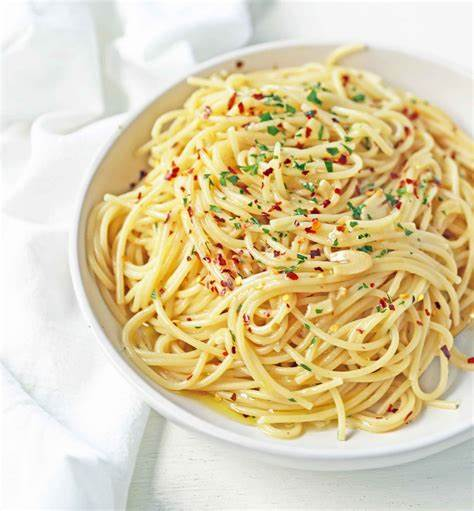

Aglio e Olio

Description
Aglio e Olio is a simple and classic pasta dish made with garlic (aglio), olive oil (olio), and sometimes red pepper flakes, tossed with spaghetti for a quick and flavorful meal.
Ingredients needed:
- Spaghetti (about 400g or 14 oz)
- Olive oil (1/4 cup)
- Garlic (4-6 cloves, thinly sliced)
- Red pepper flakes (1/2 tsp, adjust to taste)
- Salt (for seasoning and pasta water)
- Fresh parsley (optional, for garnish)
- Grated Parmesan (optional, for serving)
Steps:
- Cook the pasta
- Boil spaghetti in salted water until al dente; reserve some pasta water.
- Prepare the garlic:
- In a pan, heat olive oil and sauté sliced garlic until golden (be careful not to burn it).
- Add red pepper flakes:
- Stir in red pepper flakes for a bit of heat.
- Toss with pasta:
- Add the cooked pasta to the pan, tossing it with the garlic and oil. Add some reserved pasta water to emulsify the sauce.